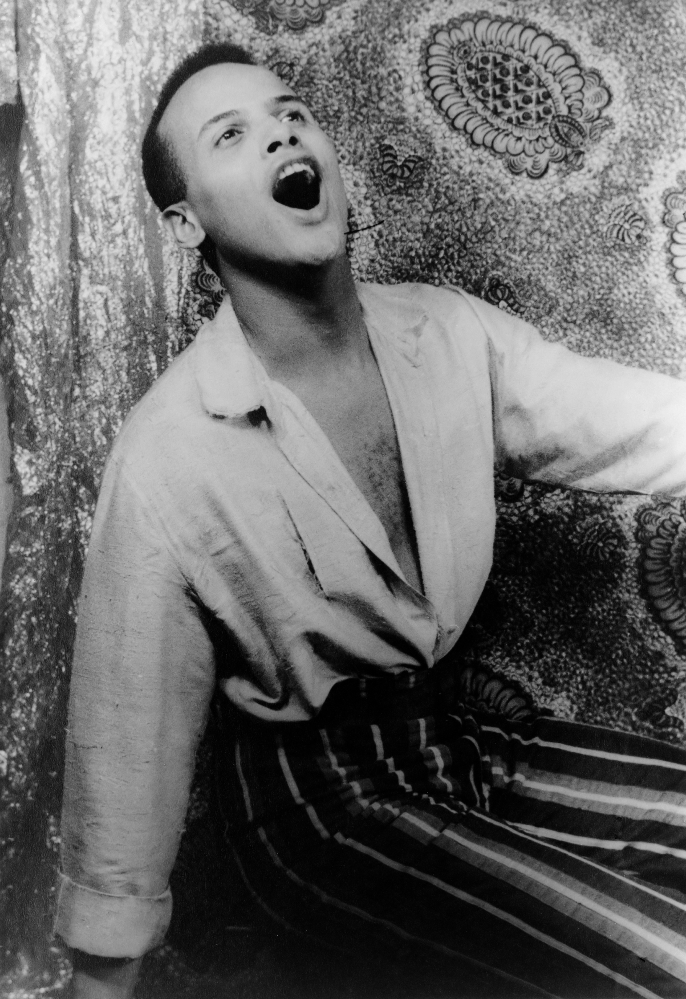

Harold George Bellanfanti Jr
'Harry Belefonte'
March 1, 1927 - April 25, 2023

Belafonte in 1954
- 1927 - Born in Harlem, New York City, to Caribbean immigrants
- 1944 - Joins the Navy, serving during World War II
- 1948 - Appears in his first Broadway production, "John Murray Anderson's Almanac"
- 1953 - Records the album "Calypso", which becomes the first album to sell over one million copies
- 1954 - Appears in the film "Carmen Jones" alongside Dorothy Dandridge
- 1956 - Wins a Tony Award for his role in the Broadway play "John Murray Anderson's Almanac"
- 1957 - Becomes the first Black performer to win an Emmy Award for his television special "Tonight with Belafonte"
- 1960 - Helps to finance and organize the Student Nonviolent Coordinating Committee (SNCC), a prominent civil rights organization
- 1961 - Serves as a cultural advisor to President John F. Kennedy and performs at his inauguration
- 1968 - Produces the television special "Petula", which features a controversial duet with Petula Clark, in which he touches her arm during the song "On the Path of Glory"
- 1985 - Helps to organize the recording of the song "We Are the World" to raise funds for famine relief in Africa
- 1994 - Receives the Kennedy Center Honors, one of the highest honors in the arts
- 2017 - Retires from performing at the age of 90
- 2023 - Belafonte dies from congestive heart failure at his home on the Upper West Side of Manhattan, New York City at the age of 96.
Belafonte's life and achievements are a testament to his incredible talent, dedication, and commitment to social justice. He used his platform as a performer to advocate for civil rights and social change, and helped to pave the way for future generations of artists and activists. His impact on music and culture will be felt for generations to come, and he will always be remembered as a true icon of American and Caribbean history.